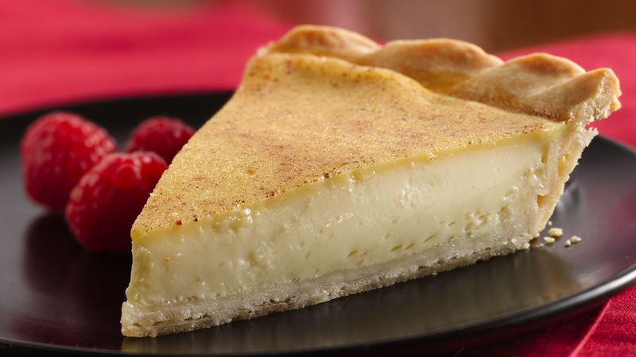

Custard Pie

Description
Silky Creamy Custard Pie brings eggs, cream, milk, sugar and vanilla into an incredibly sweet creamy treat that is prepped in a matter of minutes.
Ingredients
- 3 eggs
- ½ cup white sugar
- ½ teaspoon vanilla extract
- ½ pinch salt
- ¼ teaspoon nutmeg
- 1 cups milk
- ½ (9 inch) unbaked pie crust
Steps
-
Preheat oven to 475 degrees F (245 degrees C.)
-
In a large bowl, beat eggs and sugar. Beat in vanilla, salt and nutmeg. Stir in milk. Pour into crust.
-
Bake in the preheated oven for 10 minutes. Reduce temperature to 350 degrees F (175 degrees C) and bake for 25 to 35 minutes, or until crust is golden brown and filling is set.
Back